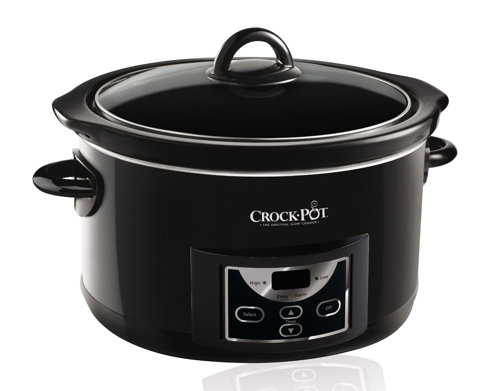
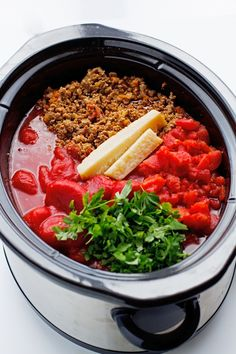
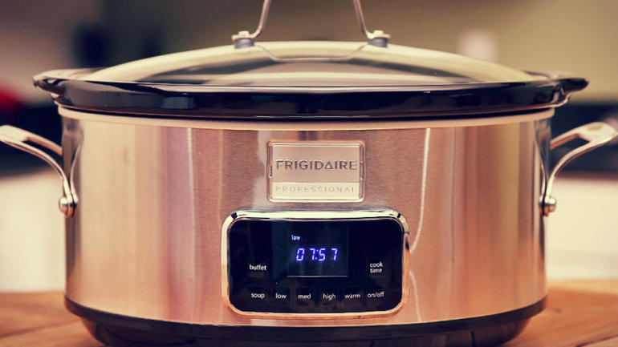
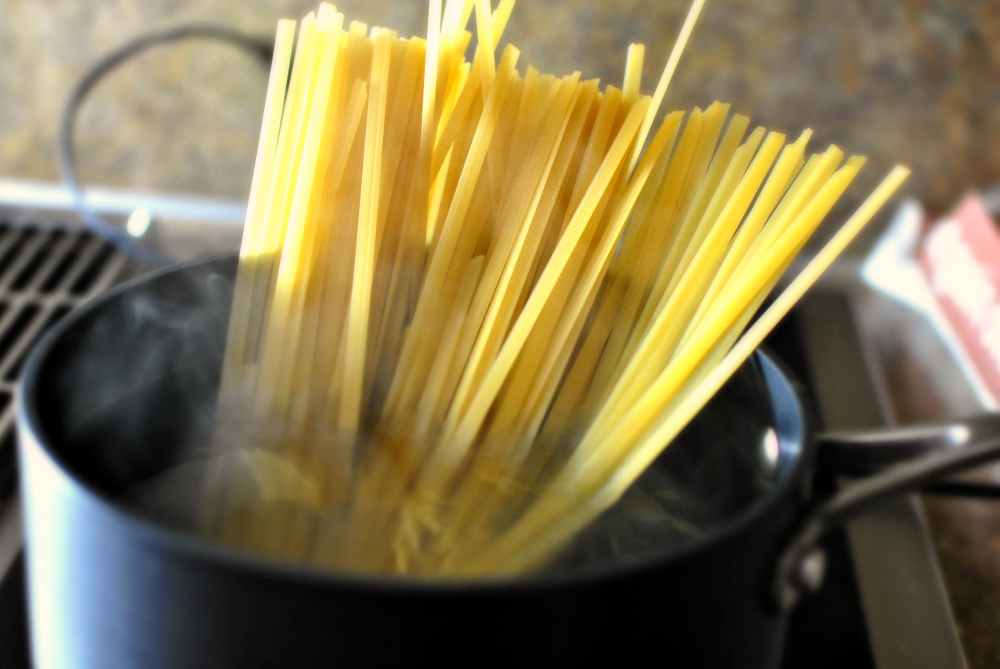

First of all, make sure you have a slow cooker! 
Size should be 4-6 quarts
Click on the image to find one!
Makes 4 servings
Skill level: Beginner Recipe from Real Simple
Ingredients
Check off the items by clicking on the box!
1 lb ground beef chuck
1 28-oz can whole/diced tomatoes
2 carrots, finely chopped
1 medium onion, chopped
1 celery stalk, chopped
2 cloves garlic, chopped
1/4 cup tomato paste
1/4 cup dry white or red wine
1 tsp dried oregano
1 tsp dried thyme
1 bay leaf
salt & pepper
3/4 lb spaghetti
grated Parmesan, for serving
Start cooking!
Hide/Show all Photos Keep your place in the instructions by clicking on the text!

In a 4- to 6-quart slow cooker, mix together the beef, tomatoes and their juices, carrots, onion, celery, garlic, tomato paste, wine, oregano, thyme, bay leaf, 1 teaspoon salt, and ¼ teaspoon pepper.

Cover and cook until the vegetables are tender and the meat is cooked through, on low for 7 to 8 hours or on high for 4 to 5 hours (this will shorten total recipe time).

Twenty minutes before serving, cook the spaghetti according to the package directions; drain and return it to the pot. Toss the spaghetti with the Bolognese and sprinkle it with the Parmesan.